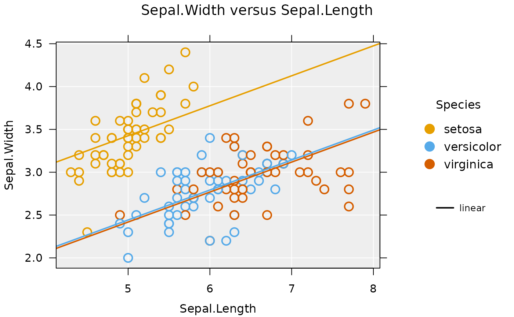

Plotting parameters for iNZight Plots
inzpar(..., .viridis = requireNamespace("viridis", quietly = TRUE))If arguments are supplied, then these values are set. If left empty, then
checks if the viridis package is installed; or can be turned off the default list is returned.
an object of class inzpar.list
A whole suite of parameters that can be used to fine-tune plots obtained from the
iNZightPlot function.
The parameters include both plot type, style, and appearance.
the plotting symbol to be used; default is `21` (circle with fill)
the colour of points. this can either be a single value, or a vector of
colours if colby is specified
a function to use for colouring points, etc., or the name of a palette,
see inzpalette
emphasize the chosen level of a colour by variable. For numeric
colour by, col.emphn specifies the number of quantiles to use.
if TRUE, emphasised points will be positioned on top
the default colour functions, containing a list with entries for 'cat' and 'cont' variables
the colour for missing values; default is a light grey
logical, if TRUE the palette will be reversed
the method to use for colouring by a variable, one of 'linear' or 'rank'
the overall scaling for the entire plot; values less than 1 will make the text and points smaller, while values larger than 1 will magnify everything
the scaling value for points
the scaling value for points in a dotplot. Note, this is not multiplicative with
'cex.pt'
the scaling value for the plot labels
the scaling value for the axis labels
the scaling value for the main plot title
the scaling value for text on the plot
one of 'proportional' (default) or 'emphasize'
transparency setting for points; default is 1, 0 is fully transparent
the background colour for the plot
logical to control drawing of axis grid lines
if 'grid.lines' is TRUE, this controls the colour of them.
The default is 'default', which will choose a colour based on the value of 'bg')
the fill colour for points; default is "transparent"
the line width of lines (for joining points)
the line type of lines (for joining points)
the line width used for points; default is 2
the colour of lines used to join points
vector of up to two colours for the background of subplot labels. If only one specified, it is used for both.
the default colour for locating points
colour to use for highlighting points
the axes to add jitter to. Takes values "x", "y",
or "xy" (default is en empty string, "")
the axes to add rugs to. Takes same values as jitter
a vector containing the trend lines to add to the plot. Possible values
are c("linear", "quadratic", "cubic")
the smoothing (lowess) for the points. Takes a value between 0 and 1 (the default, 0, draws no smoother)
the line type used for smoothers if trend.by = TRUE
if quantile smoothers are desired, they can be specified here as either
the quantiles to smooth over (e.g., c(0.25, 0.5, 0.75)), or "default", which
uses the sample size to decide on an appropriate set of quantile smoothers
logical, if TRUE, then a 1-1 line of equality is drawn
logical, if TRUE, then points are joined by lines
logical, if join = TRUE and colby is specified, points are joined
by the specified variable
a named list of colours to be used for drawing the lines. The default is
list(linear = "blue", quadratic = "red", cubic = "green4")
a named list of line types for various types of trend lines. The default is
list(linear = 1, quadratic = 2, cubic = 3)
logical, if TRUE, then trend lines are drawn separately for
each group specified by colby
logical, if TRUE, the trend lines by group are given the same slope;
otherwise they are fit independently
the colour of the smoother
the colour of the line of equality
the line type of the line of equality
logical, if TRUE, a boxplot is drawn with dotplots and histograms
the line width, colour, and fill colour for the box plot drawn
the line width, colour, and fill colour of bars in a bar plot
logical, if TRUE bar graphs will display counts instead of percentages (the default)
may no longer be necessary ...
the line width of comparison and confidence intervals, respectively
the colour of comparison and confidence intervals, respectively. These take a length 2 vector, where the first element is used for normal inference, while the second is used for bootstrap intervals
the type of inference added to the plot. Possible values
are c("comp", "conf")
the parameter which we obtain intervals for. For a dotplot or histogram,
this can be either "mean" or "median"; for bar plots it can be "proportion"
the width of confidence intervals, default 0.95 for a 95% confidence interval
logical, if TRUE, then nonparametric bootstrap simulation is used
to obtain the intervals
the min count for barplots inference; counts less than this are ignored
the number of bootstrap simulations to perform
sample sizes over this value will use a large-sample plot variant (i.e., scatter plots will become hex plots, dot plots become histograms)
logical, if TRUE, then the large-sample plot variance is used
the number, N, of bins to use for the scatter-grid plot, producing an N x N matrix
the number of bins to use for hexagonal binning
the style of the hexagons, one of "size" or "alpha"
logical, Pass on rounding error to nearest not-yet-drawn hexes so that rare classes get represented
the number of bins to use for the histogram
(The default NULL uses point size to approximate dot plot)
if quant.smooth = "default", these sample size values are used
to determine which quantiles are drawn
used to override the default plot type. Possible values, depending on data type,
include c("scatter"|"grid"|"hex"|"dot"|"hist")
logical, if TRUE, then the type of plot is kept consistent between different
subsets
a vector of two values used to decide whether to use all small-sample or all large-sample plots
a vector defining the x axis limits (default NULL will use the data)
a vector defining the y axis limits (default NULL will use the data)
a list of variable transformations (e.g., list(x = 'log'))
a list containing any additional features for new plots (e.g., maptype)
integer specifying optional rounding of numerical output, default NA (ignored)
integer specifying rounding for percentages (default 2)
integer specifying number of significant figured in numeric output (default 2). Ignored if round is not NA.
# arguments can be passed directly to \code{iNZightPlot}
iNZightPlot(Sepal.Length,
data = iris, col.pt = "red",
box.col = "blue", box.fill = "green"
)
# or stored and passed to it (only pars relevant to the current
# plot are used)
mypar <- inzpar(
col.pt = "red", box.col = "blue", box.fill = "green",
trend = "linear", trend.by = TRUE
)
inzplot(Sepal.Length ~ Species, data = iris, inzpar = mypar)
iNZightPlot(Sepal.Length, Sepal.Width,
data = iris, inzpar = mypar,
colby = Species
)
